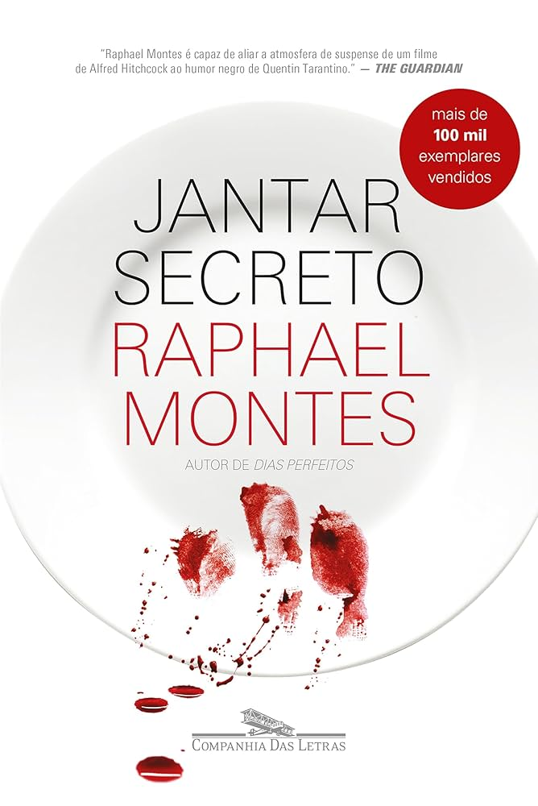

Four childhood friends, eager for a taste of city life, swap rural Brazil for an apartment in Copacabana, Rio. But they have no idea of the fate that awaits them there. . . . Dante, Piglet, Miguel, and Hugo are your average students trying to make ends meet with part-time jobs, excited about the bright futures at their fingertips. So when their rent skyrockets, they struggle to keep their new lives and big dreams afloat. They need to make money however they can. In order to keep their apartment, the friends adopt an unorthodox plan and are soon sucked into a dark world of secret dinner parties catering to the twisted fantasies of Rio’s elite. What starts as a joke quickly spirals out of their control. As the four friends fall deeper into this dark underworld and earn more money, the stakes get higher and the consequences deadlier, revealing the devious depths that lurk within each of them and threatening not only their friendship but also their lives.
Raphael Montes was born in 1990 in Rio de Janeiro. A writer and screenwriter, he has published the novels Suicidas, Dias perfeitos, O vilarejo, Jantar secreto, and Uma mulher no escuro, winner of the 2020 Jabuti Prize. His books have been translated into more than 25 languages and have had their adaptation rights sold for theater and film. He wrote the films Praça Paris, A menina que matou os pais, and O menino que matou meus pais. He is the creator, head writer, and executive producer of Bom dia, Verônica, a successful Netflix series that won the 2020 APCA Award for best actor, best actress, and best dramaturgy.